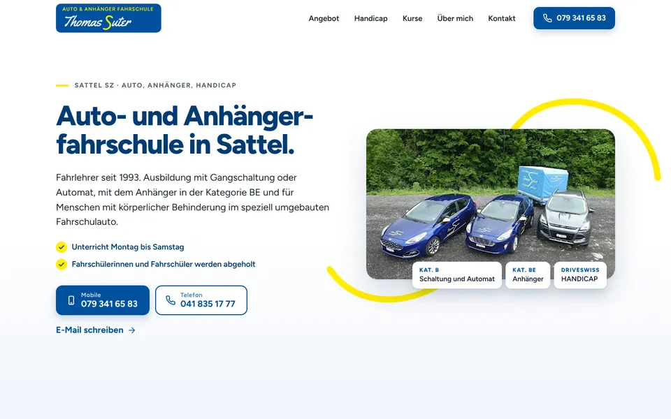
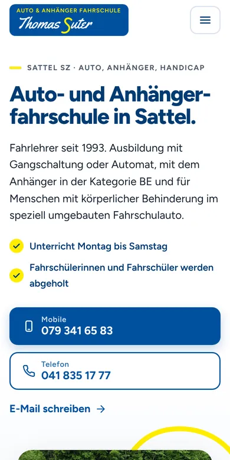

Design A
Die gelbe Kurve
Hell, ruhig und mit grosser Schrift sehr gut lesbar: Das gelbe S aus Ihrem Logo zeichnet sich als Strassenkurve um Ihr Flottenbild und verbindet weiter unten die Stationen des Wegs zum Führerausweis ab 2027. Dazwischen Ihr Angebot als Kacheln, ein eigener Abschnitt für Menschen mit Handicap, Ihre Kurse und Ihr Werdegang.
- Hell
- Blau und Gelb
- Gut lesbar